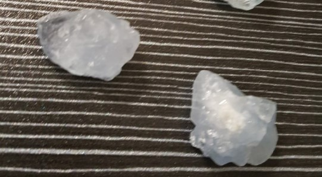
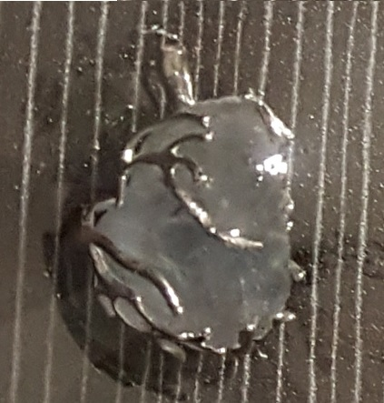

La celestite (detta anche celestina) è un minerale composto da solfato di stronzio, con formula chimica SrSO₄. Il suo caratteristico colore azzurro cielo – che le ha valso il nome dal latino caelestis (celeste) – è dovuto a tracce di elementi come il bario o a centri di colore legati a radiazioni naturali. Può presentarsi anche incolore, bianca o con tenui tonalità azzurre, blu-grigiastre.
La celestite si forma tipicamente in ambienti sedimentari evaporitici e in geodi, spesso associata a zolfo, gesso, calcite e quarzo. I cristalli sono generalmente tabulari, prismatici o a forma di dipiramide. A causa della sua bassa durezza e della perfetta sfaldatura, è una pietra molto fragile e delicata. I giacimenti più importanti si trovano in Madagascar, Italia (Sicilia), Inghilterra, Messico e Polonia.
Nell’antichità era considerata la pietra del cielo legata al mondo superiore, alla purezza e alla comunicazione spirituale. Per via del suo colore azzurro etereo, è nota come “pietra degli angeli”. Venerata da diverse culture come messaggera di pace e connessione divina, veniva utilizzata in rituali di preghiera e meditazione per aprirsi alle energie superiori.
In ambito cristalloterapico è associata a serenità, chiarezza interiore, comunicazione, quiete mentale, dolcezza emotiva. La sua energia sottile e pacifica aiuta a placare i pensieri agitati, a favorire il dialogo autentico e a risvegliare la sensibilità spirituale.
Posizionata sul quinto chakra (Vishuddha, chakra della gola) favorisce una comunicazione più chiara e serena, aiuta a esprimere emozioni con dolcezza e a trovare le parole giuste al momento giusto.

La celestite è considerata una delle pietre più pacifiche e rasserenanti del regno minerale. La sua energia azzurra invita al rilassamento profondo, alla sospensione dei conflitti e all’ascolto autentico. In molte tradizioni olistiche, viene utilizzata per calmare l’iperattività mentale, favorire il sonno e aprire canali di comunicazione con le dimensioni più sottili.
Tenere una celestite sul comodino o in camera da letto aiuta a creare un’atmosfera di serenità e distensione, allontanando tensioni e promuovendo un riposo rigenerante. È particolarmente indicata per chi soffre di insonnia da pensieri ricorrenti o vive ambienti domestici carichi di stress.
- Serenità e quiete mentale
- Comunicazione chiara e dolce
- Connessione spirituale
- Distensione emotiva
- Sul comodino o in camera da letto
- Sul chakra della gola durante la meditazione
- In spazi di preghiera o relax
- Vicino al letto per sogni sereni
“Nell’antichità era considerata la pietra del cielo legata al mondo superiore, alla purezza e alla comunicazione spirituale.
Per via del suo colore azzurro etereo, è nota come “pietra degli angeli”.
In ambito cristalloterapico è associata a serenità, chiarezza interiore, comunicazione, quiete mentale, dolcezza emotiva.
Tenere una celestite sul comodino o in camera da letto aiuta a creare un’atmosfera di serenità e distensione.
Posizionata sul quinto chakra (Vishuddha, chakra della gola) favorisce una comunicazione più chiara e serena.
⚠️ AVVERTENZE: la celestite teme l'acqua ed è una pietra molto fragile. Trattare con delicatezza.

Cura e precauzioni
La celestite è molto fragile (durezza 3-3,5). Non immergerla mai in acqua perché potrebbe danneggiarsi o disgregarsi. Puliscila solo con un panno asciutto e morbido. Conservala in un ambiente protetto, lontano da urti e da altre pietre più dure.
Giacimenti e varietà
I migliori cristalli provengono da Madagascar (geodi spettacolari), Sicilia (Racalmuto), Inghilterra (Bristol), Messico e Polonia. La celestite si trova anche in forma di noduli o druse. Le varietà più pregiate hanno un azzurro intenso e cristalli ben formati.
Scienza e simbolo
La mineralogia evidenzia la sua fragilità e la composizione a base di stronzio. La tradizione la associa al mondo angelico e alla pace interiore. Un delicato equilibrio tra chimica e spiritualità, da maneggiare con cura e rispetto.